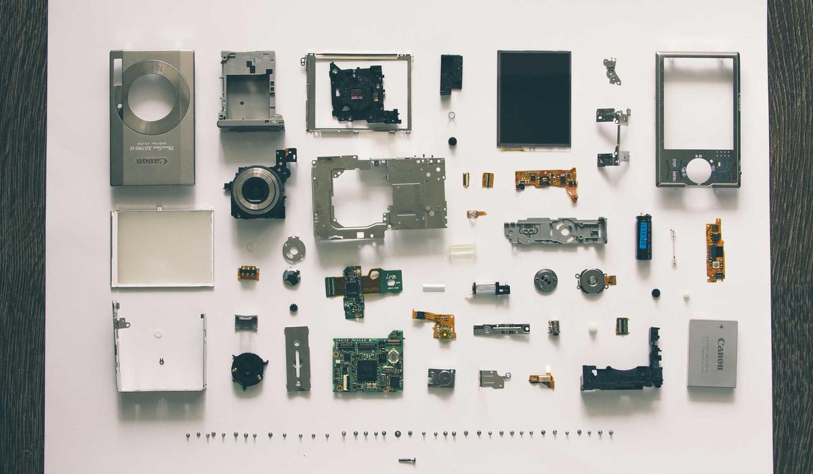

Card 1
A short text.
Read more about card 1A small, fast and accessible carousel. The CSS sets the layout, and the motion runs on the compositor, so it stays smooth on weak phones. Loop, drag, autoplay, auto scroll and vertical carousels, with no dependencies.



Each motion runs on the compositor. No script runs on each frame, also during a drag.
The sizes, the margins, the axis and the alignment come from your CSS.
10 KB gzip with loop, autoplay, auto scroll, auto height and sync.
WCAG 2.1 AA: names, keyboard, focus, live region and reduced motion.
Better Carousel is one JavaScript file and one stylesheet. It has no dependencies.
The minified file adds the global BetterCarousel function. This page loads the library in this way.
<link rel="stylesheet" href="dist/better-carousel.css">
<script src="dist/better-carousel.min.js"></script>npm install better-carouselimport BetterCarousel from 'better-carousel';
import 'better-carousel/css';| File | Format | Use |
|---|---|---|
dist/better-carousel.min.js | IIFE, minified | Script tags. The global BetterCarousel function. |
dist/better-carousel.js | ES module | Bundlers: import BetterCarousel from 'better-carousel'. |
dist/better-carousel.css | CSS | The styles with the default class names. |
src/better-carousel.scss | SCSS | The styles with your class names and colors (see Styling). |
Put the slides into a container, and give the container the layout of one row with CSS. Then call BetterCarousel() or BetterCarousel.initAll().
<div class="items items_3 carousel">
<div class="item">...</div>
<div class="item">...</div>
<div class="item">...</div>
<div class="item">...</div>
</div>/* The negative margin of the container takes back the margin of the last slide in a row */
.items {
--gap-grid-x: 20px;
--gap-grid-y: 20px;
--columns-count: 3;
display: flex;
width: calc(100% + var(--gap-grid-x));
margin: 0 calc(-1 * var(--gap-grid-x)) calc(-1 * var(--gap-grid-y)) 0;
}
.items .item {
flex: none;
width: calc(100% / var(--columns-count) - var(--gap-grid-x));
margin: 0 var(--gap-grid-x) var(--gap-grid-y) 0;
}// One carousel
const carousel = BetterCarousel(document.querySelector('.items'));
// All carousels on the page
BetterCarousel.initAll('.items.carousel', { loop: true });The library wraps the container into a root and a viewport, and adds the arrows and the dots:
<div class="better" role="region" aria-roledescription="carousel" aria-label="Carousel">
<div class="better_viewport">
<div class="items items_3 carousel better_container">...</div>
</div>
<button class="better_button better_prev" aria-label="Previous slide"></button>
<button class="better_button better_next" aria-label="Next slide"></button>
<div class="better_dots">...</div>
</div>The library does not set the size of a slide or the space between the slides. It reads the layout from the CSS: the sizes and the margins of the slides. It only moves the container. Thus the same carousel can show 1 slide on a phone and 4 slides on a desktop, with only CSS.
| The CSS of the container | The effect |
|---|---|
display: flex, a row | A horizontal carousel |
flex-direction: column and flex-wrap: nowrap | A vertical carousel (example) |
display: grid with grid-auto-flow: column | A horizontal carousel with more rows (example) |
justify-content: center | The selected slide is in the center (example) |
justify-content: flex-end | The selected slide is at the end (example) |
| The margins of the slides, and a negative margin of the container | The space between the slides, also between the last slide and the first slide in a loop |
direction: rtl | A right-to-left carousel |
A change of the CSS, a new slide or an image that loads later starts a new measure. One ResizeObserver serves all carousels on the page. It reads the layout of all carousels first, and then it writes.
Give the options in the call, in the data-carousel attribute as JSON, or for all carousels in BetterCarousel.defaults. The attribute has priority over the call.
// All carousels of the site
BetterCarousel.defaults = { loop: true, dragThreshold: 2 };
// One call
BetterCarousel(element, { align: 'center', dots: false });
// Other options for a media query
BetterCarousel(element, {
breakpoints: {
'(min-width: 1024px)': { draggable: false }
}
});<div class="items items_4 carousel" data-carousel='{"loop":true,"autoplay":3000}'>
...
</div>See all options in the Options reference.
The stylesheet has the rules that the carousel needs and the look of the arrows, the dots and the play button. Use the CSS variables to change the colors, or compile the SCSS file with other class names.
:root {
--button-arrow: url(arrow.svg); /* The icon of the arrows */
--height-button: 2.5rem; /* The size of the arrows */
/* The colors of the buttons and the dots: the dots use --button-text-disabled, the selected dot --button-base */
--button-border: #7c3aed;
--button-base: #7c3aed;
--button-text: #fff;
--button-border-active: #6d28d9;
--button-base-active: #6d28d9;
--button-text-active: #fff;
--button-border-disabled: #e8e8e8;
--button-base-disabled: #f5f5f5;
--button-text-disabled: #74787d;
}The SCSS file uses @import and global variables, so that it compiles with Dart Sass and with node-sass. Set the variables before the import:
// The class prefix: .embla, .embla_viewport, .embla_button
$better: 'embla';
// The prefix of the state classes: .is_active, .is_current
$better-state: 'is_';
// Only the rules that the carousel needs, with no look of the buttons and the dots
$better-look: false;
@import 'better-carousel';Use the same names in the options: { classes: 'embla', state: 'is_' }. See all names in Classes.
Three slides in view, aligned to the start of the viewport. Drag, swipe or use the arrows.
 5
5 6
6 8
8<div class="items items_3 carousel">
<div class="item">...</div>
<div class="item">...</div>
<div class="item">...</div>
<div class="item">...</div>
</div>BetterCarousel.initAll('.items.carousel');The container has justify-content: center. The selected slide is in the center. The first and the last snaps are trimmed, so that no empty space shows at the ends.
235 7
7<div class="items items_3 carousel is_center">
<div class="item">...</div>
<div class="item">...</div>
<div class="item">...</div>
<div class="item">...</div>
</div>.items.is_center {
justify-content: center;
}The container has justify-content: flex-end.
24 6
6.items.is_end {
justify-content: flex-end;
}If all slides fit in the viewport, the carousel does not move, and it removes the arrows and the dots. The CSS alignment applies: start, center and end.
11<div class="items items_4 carousel">
<div class="item">...</div>
<div class="item">...</div>
</div>The container has flex-direction: column, and the viewport has a height. The mouse wheel and the trackpad move the carousel smoothly, by their distance. When the wheel stops, the carousel goes to the nearest snap. At the first and the last slide, the wheel scrolls the page.
.items_vertical {
flex-direction: column;
height: 420px;
}
.items_vertical .item {
--rows-count: 3;
width: 100%;
height: calc(100% / var(--rows-count) - var(--gap-grid-y));
}// The wheel moves vertical carousels. 'both' also moves horizontal carousels, false stops it.
BetterCarousel(element, { wheel: true });Horizontal up to 768 px, vertical from 769 px. Only the CSS changes. Change the width of the window to see it.
@media (min-width: 769px) {
.items_switch {
flex-direction: column;
}
}The slides have width: auto. The images load after 1 second and change the widths. The carousel measures again and keeps the selected slide.
.items_auto .item {
width: auto;
}A CSS transition changes the width of the selected slide (the active class). The carousel keeps the slide in the center during the transition.
.items_grow .item {
width: 160px;
transition: width 0.3s;
}
.items_grow .item.active {
width: 320px;
}<div class="items carousel items_grow is_center" data-carousel='{"loop":true}'>
<div class="item">...</div>
<div class="item">...</div>
<div class="item">...</div>
<div class="item">...</div>
</div>With loop: true, the slides move to the other end. Enough slides need no clones: the library moves the original slides.
56810<div class="items items_3 carousel" data-carousel='{"loop":true}'>
<div class="item">...</div>
<div class="item">...</div>
<div class="item">...</div>
<div class="item">...</div>
</div>Six slides, centered, with loop: true.
235<div class="items items_3 carousel is_center" data-carousel='{"loop":true}'>
<div class="item">...</div>
<div class="item">...</div>
<div class="item">...</div>
<div class="item">...</div>
</div>Three slides of 40% width. The loop needs one copy of the slides. The clones are inert and hidden from screen readers.
BetterCarousel(element, { loop: true, clones: 'auto' });With clones: 'fill', the overflow of the viewport shows, and the slides fill the full width of the window. The section cuts the slides at the window edges. The photo carousel at the top of this page uses this mode.
13<div class="items items_3 carousel is_center" data-carousel='{"loop":true,"clones":"fill"}'>
<div class="item">...</div>
<div class="item">...</div>
<div class="item">...</div>
<div class="item">...</div>
</div>.better_viewport {
overflow: visible;
}
section {
overflow: hidden;
}A CSS grid with 2 rows and large items over 2 × 2 cells, with loop: true. The library finds the columns of the grid.


.items_grid_large {
display: grid;
grid-auto-flow: column;
grid-template-rows: repeat(2, 1fr);
grid-auto-columns: 25%;
}
/* The margins of the slides make the space, as in a flex row */
.items_grid_large .item {
width: calc(100% - 10px);
margin: 0 10px 10px 0;
}
.items_grid_large .item:nth-child(10n + 1) {
grid-row: span 2;
grid-column: span 2;
}Each slide is a link. A click opens the link, a drag does not. Tab moves the focus, and the carousel shows the focused slide.
With dragFree: true, the carousel glides after a drag and stops anywhere.
23579131416BetterCarousel(element, { dragFree: true });With dragFree: 'snap', the carousel glides and stops at the nearest snap.
2461011BetterCarousel(element, { dragFree: 'snap' });The default is skipSnaps: true: a fast flick can pass more than one snap. With skipSnaps: false, a flick moves one snap. A number sets the maximum count of snaps for one flick.
137810BetterCarousel(element, { skipSnaps: false });
// At most 2 snaps for one flick
BetterCarousel(element, { skipSnaps: 2 });Links, buttons and a form field in each slide. Tab moves the focus through them, and the carousel shows each focused control. A click on a field focuses it, and a drag that starts on a field does not move the carousel. An article slide keeps its own role.
A short text.
Read more about card 1A short text.
Read more about card 2A short text.
Read more about card 3A short text.
Read more about card 4A short text.
Read more about card 5A short text.
Read more about card 6<div class="items items_3 carousel">
<article class="item">
<h3>Card 1</h3>
<a href="/card-1">Read more</a>
<button type="button" aria-pressed="false">Like</button>
</article>
...
</div>With arrows: '.heading', the arrows go into the heading of the section, outside the carousel. The library searches for the selector in the root and then in each parent of the root.
568<section>
<div class="heading">
<h2>New products</h2>
</div>
<div class="items items_4 carousel" data-carousel='{"arrows":".heading","dots":false}'>
...
</div>
</section>The thumbnails use sync with the main gallery. A click on a thumbnail selects the photo, and a swipe on the photo moves the thumbnails.
<div class="items items_1 carousel gallery_main" data-carousel='{"dots":false}'>
<div class="item"><img src="photo-1.jpg" alt="Photo 1"></div>
...
</div>
<div class="items carousel is_center gallery_thumbs" data-carousel='{"sync":".gallery_main","arrows":false,"dots":false}'>
<button type="button" class="item"><img src="thumb-1.jpg" alt="Show photo 1"></button>
...
</div>With classes: 'embla', the library uses the class names of the old Embla wrapper of the theme. Compile the SCSS file with $better: 'embla'. 16 snaps: the dots zoom around the selected dot.
246101113<div class="items items_4 carousel" data-carousel='{"classes":"embla","loop":true}'>
...
</div>With state: 'is_', the state classes get a prefix: is_active, is_current.
137BetterCarousel(element, { classes: 'embla', state: 'is_' });A new slide every 2 seconds, and 6 seconds on slide 3 (data-delay). The button stops and starts it. The keyboard focus in the carousel, a hidden tab and a carousel out of the view pause it. With prefers-reduced-motion, it does not start.
56<div class="items items_3 carousel" data-carousel='{"loop":true,"autoplay":2000}'>
<div class="item">...</div>
<div class="item">...</div>
<div class="item" data-delay="6000">...</div>
...
</div>BetterCarousel(element, {
autoplay: {
delay: 4000,
stopOnInteraction: true,
stopOnMouseEnter: false,
stopOnFocusIn: true,
stopOnLastSnap: false,
playOnInit: true
}
});A strip of logos that moves at a constant speed. It runs on the compositor: no script runs on each frame. Five logos fit in the viewport, so clones fill the strip. It pauses while the mouse is on it.
BetterCarousel(element, {
loop: true,
arrows: false,
dots: false,
autoScroll: {
speed: 60, // px per second
direction: 'forward',
startDelay: 1000,
stopOnInteraction: true,
stopOnMouseEnter: true
}
});With autoHeight: true, the viewport gets the height of the tallest slide in view, with a CSS transition.
BetterCarousel(element, { autoHeight: true });.better_auto_height .better_viewport {
transition: height 0.3s;
}With lazy: true, a carousel out of the view waits until it comes within one screen of the view. This decreases the script time and the layouts at page load. A number sets the distance in px. A carousel near the screen starts at once, so that its arrows and dots do not move the page.
BetterCarousel.initAll('.items.carousel', { lazy: true });
// Start within 300 px of the view
BetterCarousel.initAll('.items.carousel', { lazy: 300 });Until the start, BetterCarousel.get() gives the carousel, but rootNode() is undefined and slideNodes() is empty. A goTo() starts the carousel at once. Clip the slides of a waiting carousel with CSS (for example overflow-x: clip on a parent), so that the page does not get wider than the screen.
| Option | Default | Description |
|---|---|---|
axis | 'auto' | 'x', 'y', or 'auto': from the CSS of the container. |
align | 'auto' | 'start', 'center', 'end', a function (viewSize, snapSize, index) => offset, or 'auto': from justify-content. |
direction | 'auto' | 'ltr', 'rtl', or 'auto': from the CSS direction. |
loop | false | Go from the last slide to the first slide. |
clones | 'auto' | 'auto': clones only if the loop needs them. 'fill': clones that fill the window. false: no clones. |
dragFree | false | true: glide and stop anywhere. 'snap': glide and stop at a snap. |
containScroll | 'trimSnaps' | 'trimSnaps': no empty space at the ends. 'keepSnaps': the same, but keep a snap for each group. false: snaps can show empty space. |
slidesToScroll | 1 | The number of slides in one snap, or 'auto': as many as fit in the viewport. |
skipSnaps | true | A fast flick can pass more than one snap. false: one snap. A number: at most this number of snaps. |
dragThreshold | 10 | The distance in px before a drag starts. |
duration | 400 | The duration of a motion of one snap, in ms. A longer motion takes more time, to 2 times this value. |
startSnap | 0 | The snap at the start. |
lazy | false | true: start when the carousel comes within one screen of the view. A number: the distance in px (example). |
draggable | true | Drag with the mouse, the pen and the finger. |
wheel | true | The mouse wheel moves a vertical carousel. 'both': also a horizontal carousel. false: off. |
resize | true | Measure again when a size changes. |
slideChanges | true | Measure again when a slide is added or removed. |
focus | true | Go to a slide that gets the keyboard focus. |
inViewThreshold | 0 | The visible part of a slide, from 0 to 1, for slidesInView() and the in-view class. |
active | true | false: do not start. Use it in breakpoints. |
breakpoints | {} | Options for media queries: { '(min-width: 768px)': { loop: true } }. |
container | null | A selector of the container, if the element is the root. |
slides | null | A selector of the slides, if not all children of the container are slides. |
wrap | true | Add the root and the viewport. false: the page has them. |
arrows | true | Add the arrows: true (in the root), false, an element or a selector. |
dots | true | Add the dots. The same values as arrows. |
labels | English | The texts for screen readers: carousel, slide ('%d of %n'), prev, next, dot, play, pause. |
classes | null | A class prefix such as 'embla', or an object with the names to change (Classes). |
state | '' | The prefix of the state classes, such as 'is_'. |
sync | null | Another carousel, its container or a selector. The two carousels select the same slide. |
autoplay | false | true, a delay in ms, or an object (example). |
autoScroll | false | true, a speed in px/s, or an object (example). |
autoHeight | false | The viewport gets the height of the tallest slide in view. |
BetterCarousel(element, options) returns the carousel. The names are the same as in Embla where the feature is the same.
| Method | Description |
|---|---|
goTo(index, instant) | Go to a snap. With instant, jump with no motion. |
goToNext(instant), goToPrev(instant) | Go to the next or the previous snap. |
goToSlide(index, instant) | Go to the snap of a slide. |
canGoToNext(), canGoToPrev() | Find if there is a next or a previous snap. |
selectedSnap(), previousSnap() | The index of the selected snap and of the snap before it. |
selectedSlide() | The index of the selected slide. |
snapOfSlide(index) | The snap that shows a slide. |
snapList() | The progress of each snap, from 0 to 1. |
scrollProgress() | The progress now, from 0 to 1, also during a motion. |
slidesInView() | The indexes of the slides in view. |
slideNodes(), rootNode(), viewportNode(), containerNode() | The elements of the carousel. |
isFit() | Find if all slides fit in the viewport. |
options() | The options now, with the breakpoints. |
reInit(options) | Merge new options and start again. The selected slide stays. |
destroy() | Remove the carousel and restore the markup. |
on(name, handler), off(name, handler) | Add or remove an event handler. The handler gets (carousel, name). |
autoplay, autoScroll | With the option: play(), stop(), isPlaying(). Autoplay also has reset(). |
BetterCarousel.get(element) | The carousel of a root, a viewport or a container. |
BetterCarousel.initAll(selector, options) | Start a carousel on each element. Returns the carousels. |
BetterCarousel.defaults | The options for all carousels. |
const carousel = BetterCarousel(element, { loop: true });
carousel.on('select', (carousel) => {
console.log('Slide', carousel.selectedSlide());
});
document.querySelector('.next').addEventListener('click', () => carousel.goToNext());Add a handler with on().
| Event | When |
|---|---|
init | The first measure is done. |
reinit | A reInit() or a breakpoint started the carousel again. |
resize | The layout changed. |
select | The selected snap changed. |
scroll | The location changed during a motion or a drag. A handler makes the motion run in a requestAnimationFrame loop. |
settle | A motion stopped. |
pointerdown, pointerup | A drag started or stopped. |
slidesinview | The slides in view changed. |
slideschanged | A slide was added or removed. |
slidefocus | A slide got the keyboard focus. |
autoplay:play, autoplay:stop | The autoplay started or stopped. |
autoscroll:play, autoscroll:stop | The auto scroll started or stopped. |
destroy | The carousel was removed. |
The default names. A prefix in classes changes the first part of the names. The state prefix changes the state classes: active, dragging, playing and the dot classes.
| Class | Element |
|---|---|
better | The root |
better_viewport | The viewport |
better_container | The container |
better_horizontal, better_vertical | The axis, on the root |
better_dynamic | On the root, if the slides do not fit |
better_auto_height | On the root, with autoHeight |
better_button, better_prev, better_next, better_play | The buttons |
better_dots, better_dot | The dots |
active | The selected slide |
clone | A clone of a slide |
dragging, playing | On the root, during a drag and while autoplay or auto scroll plays |
current, prev, next, first, last | The selected dot and the 4 dots around it |
// .embla, .embla_viewport, .embla_button, .is_active
BetterCarousel(element, { classes: 'embla', state: 'is_' });
// Change one name
BetterCarousel(element, { classes: { active: 'selected' } });The carousel follows the carousel pattern of the WAI-ARIA Authoring Practices and WCAG 2.1 AA.
article or a list item keeps its own role.aria-live), except during autoplay.inert and hidden from screen readers.prefers-reduced-motion, they do not start.The library is made for weak phones: a motion runs on the compositor, and a carousel at rest uses no CPU.
translate. No script runs on each frame.ResizeObserver serves all carousels. It reads the layout of all carousels first, then it writes, so the browser does one layout.translate and zoom with transform: a click needs no layout of the dots.| Measure, phone with a 4 times slower CPU | Better Carousel |
|---|---|
| JS size, gzip | 10.2 KB |
| CPU load during 10 s of auto scroll | 0.5% |
| CPU load during 10 s of autoplay | 1.1% |
| Total Blocking Time added at page load | 0 ms |
| Layout shift | 0 |